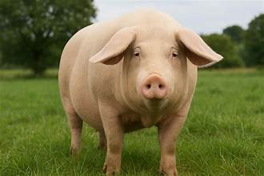
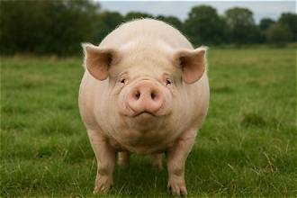
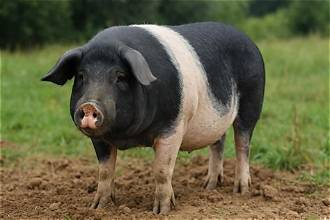
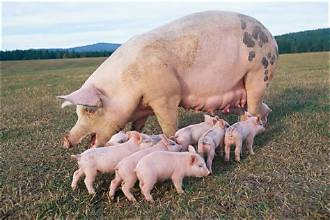

Duroc: Widely considered the gold standard for meat quality among commercial swine breeds.
Its pork features high intramuscular fat (marbling), resulting in exceptionally tender, juicy, and flavorful meat.
It is highly sought after for premium fresh cuts and high-end processing.
Purebred breeding stock commands premium prices because of high demand for boars as terminal sires.
Its meat often fetches premium pricing in specialty butcher shops and restaurant markets.

Hampshire: Excellent choice for lean muscle yield. Produces well-muscled carcasses with very thin backfat and a high proportion of lean meat (especially loin and ham),
though it generally contains less marbling than Duroc pork.
Moderate to High. Command solid prices in livestock sales as terminal sire genetics that consistently pass down heavy muscling and
high lean-meat percentages.

Landrace: Primarily valued for bacon and belly meat production due to its unusually long body frame,
delivering a high yield of lean loin and side cuts with low backfat.
Moderate. Like the Large White, Landrace genetics are commercially abundant and affordably priced,
commonly sold in female packages for breeding systems.

Large White: Known for consistent, high-quality lean pork with a well-balanced meat-to-fat ratio.
Its firm texture makes it versatile for fresh pork sales, processing, and bacon.
As one of the world's most widespread commercial breeds,
breeding stock and piglets are readily available at standard market rates.